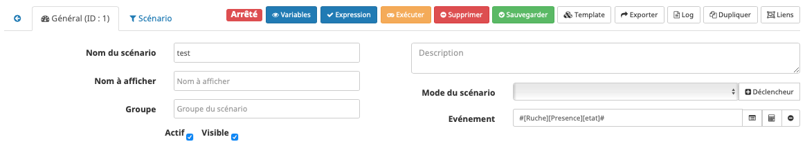
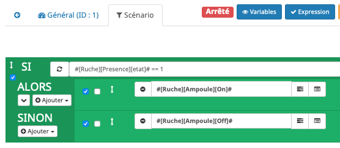

Tuto¶
Scénario 1¶
Pilotage d’une ampoule à partir d’un capteur de présence avec un scénario
Pré-requis¶
- Ampoule IKEA incluse (Dans cette exemple : le nom de l’objet est “Ampoule”)
- Capteur de présence inclus (Dans cette exemple : le nom de l’objet est “Capteur”)
- Télécommande IKEA incluse (Dans cette exemple : le nom de l’objet est “Tele”)
Réalisation¶
Nous allons utiliser les scénarios:

Créons un scénario “test” avec pour déclencheur “Présence”.
Et les actions:
Ici, quand une présence est détectée, on allume l’ampoule et quand la présence n’est pas activée on éteint l’ampoule.
Scénario 2¶
Présence->Ampoule<-Télécommande
A cette étape cet objet “Tele” dans Jeedom ne peut être utilisé. Il faut exécuter les étapes de du chapitre “Simuler la télécommande” ci-dessous.
Continuons en configurant l’ampoule depuis la “Tele”:
- Allumer l’ampoule.
- Approcher la télécommande à quelques centimètres de l’ampoule
- Appuyer plus de 10s sur le bouton OO au dos de la télécommande: la led rouge sur la face avant de la télécommande doit clignoter et l’ampoule doit se mettre à à clignoter.
La télécommande pilote l’ampoule et l’ampoule remonte son état à Jeedom.